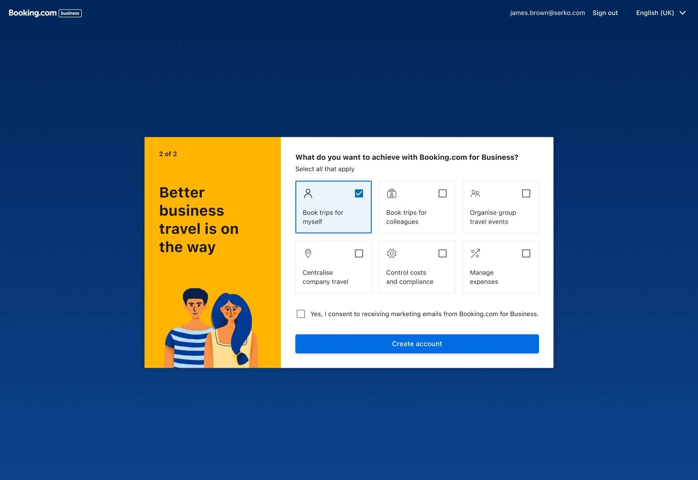
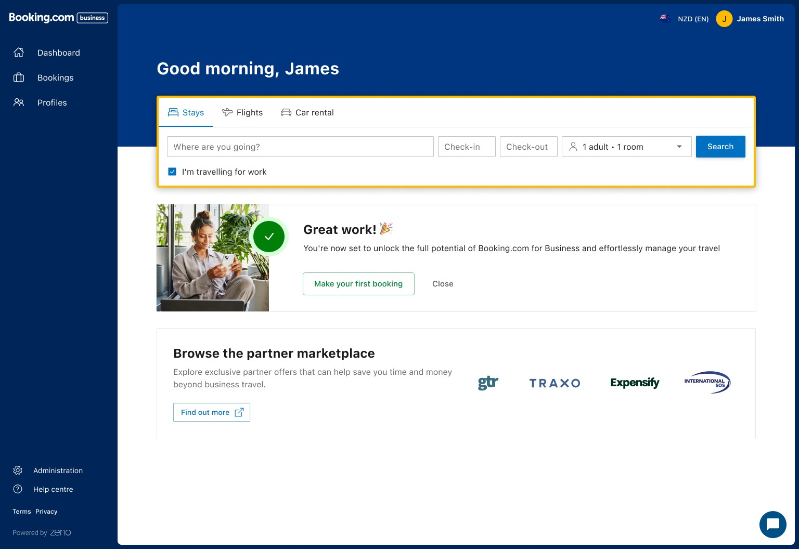
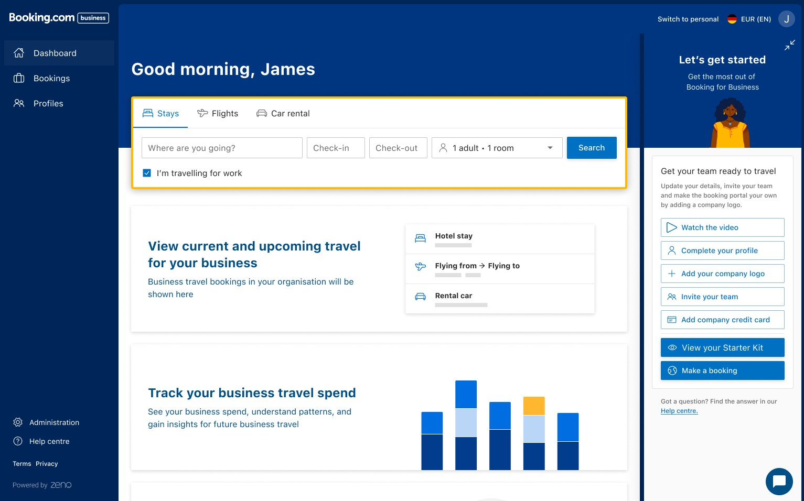

Context & challenge
New users completing B4B registration landed on an empty dashboard with no clear next step — and a piece of information already collected during onboarding, what the user wanted to achieve on the platform, was going unused the moment their account existed.
The business goal was direct: drive administrators into the Admin area to add more users, since team size correlates with booking volume — the same growth thesis behind the registration redesign and the Team Management project.
Role & contribution
Senior Product Designer, working with Anna Bondarenko (Product Manager), James (Product Owner), Lucas (Senior Engineer), and Keryn (Senior Researcher).
The mechanism
The last onboarding step asks users what they want to achieve — multi-select, intentionally skippable so it never blocks account creation. On first dashboard visit, a "Tips to getting started" widget shows three tasks mapped to whatever they chose, each routing directly into the matching Admin page.
The version that shipped was scoped deliberately, not shown to everyone. Only users whose stated goal went beyond booking for themselves saw the checklist; users who selected only "book trips for myself" didn't. That scoping turned out to be the entire result, not a detail.
For users who skip the goal picker, the widget doesn't come up empty. Keryn (Senior Researcher) validated the fallback set through card sorting: with no goal selected, the widget defaults to the three options users rated most important — invite a colleague, add payment methods, add company logo — the same three in the shipped widget. Legacy usage data pointed the same way before the card sort confirmed it.


Iteration through the growth team
The feature didn't ship in its final shape, and the first real attempt actively hurt the business. An earlier version, "Let's get started," was a slide-out sidebar triggered as soon as a user landed on the dashboard, with a static seven-item checklist shown to every user regardless of stated goal: watch the video, complete your profile, add a company logo, invite your team, add a company credit card, view your starter kit, make a booking. Tested as a one-size-fits-all rollout, it reduced booking conversion by 14%.
That failure is what justified narrowing the feature to a personalised, segment-specific version rather than shipping a generic checklist to everyone. Personalisation wasn't a polish pass here — it was the fix for a version that was actively losing bookings.

That convergence, from a generic seven-item list to a personalised three-item one, lines up with well-documented onboarding research: checklists in the three-to-five item range consistently outperform longer ones, and personalising a checklist to stated intent is the same pattern Notion uses when it asks new users what they'll use the product for. Whether the growth team worked from that research directly or arrived at it through testing, the outcome matches it.
Results & impact
I left the team before this had been live long enough to measure. Anna Bondarenko, who stayed on and owned the analysis, shared the results afterward. Every figure below applies to the segment the checklist actually targeted — users whose stated goal went beyond booking for themselves — not the full user base.
Engagement with every Company Setup task the widget pointed to also rose.
The unique-bookers lift is worth reading carefully: a 3.4% increase in unique bookers means part of the booking gain came from activating people who wouldn't have booked at all, not only from existing bookers booking more.
Status
Shipped and live. Results confirmed, for the targeted segment, by data shared after I'd left the team.
Reflection & learnings
The same checklist idea failed by 14% when shown to everyone, and worked by nearly 10% when shown only to the people it was built for. Personalisation wasn't a refinement on top of a good idea — it was the difference between the feature hurting the business and helping it. The connective tissue, a signal captured in onboarding activating a mechanism in a completely different part of the product, is still the more interesting design story. But it's the segmentation, not the connection itself, that the numbers actually back up.